AlaskaStories.com
Stories 9...
Page contents:
Bou Trip:
hunting
Wolf Moose Chase: hunting
Merry Christmas: 2005 Christmas form
letter
Hey, this aint no bullshit...
Bou Trip, 2005
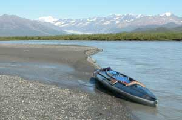
There I was mind you, and it was desperate indeed, albeit as usual. The river was way high. The water was bank-to-bank, over the edge, through the brush, and rising. I was wondering where I might find a place to put my tent, that was not up in the brush of the brushy valley side slopes where there are no tent spots. It was a typical glacial outwash valley of its sort during high water, wide and flat bottom with marsh and beaver ponds, or brushy side slopes. No exceptions.I kept on trudging along the bank, lining my kayak upstream toward the mouth of the glacier. The sun's heat rolled down the slopes of the Alaska Range mountains, bouncing over the dark rocks and soaking into the glacier, melting the ice, washing the water into the moulins plunging down into the depths of the glacier, and then out the river below. As the hot day wore on, the water got higher. It was that desperate.
If the pictures make it look less desperate, it is because I took the pictures. This is how adventure pictures work. If you go for the adventure, you might find it, and those are the times you are a bit too busy, inconvenienced or too concerned, to get the camera out to take pictures. When everything is nice and pleasant, you therefore take out the camera, for the pleasant looking pictures. On those commercial photo trips, like you see in the photo-heavy magazines, the trips are for the pictures, not the adventure. Pictures require a lot of time and hassle, so the trips do not go as far, or get where camera guys have more good sense than to go, so they stage the pictures that portray eventful events, usually near camp. The pictures I take are real, and therefore really boring, which is the way they should be, to leave room for the rhetorical illusions.
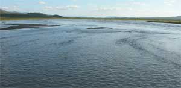
Same old thing. Off to chase the wily caribou to supplement the lean larder for the winter. A larger caribou is only a third the size of a moose, so it only supplements the larder. I dragged out the hunting stuff from where I left it in good order last year, mostly. I tried to find the equipment list, in one of the stacks of papers, so I would not forget anything. I noticed the things that I put on the repair list, but did not get to that list. I duct taped those things, and will get them fixed first thing before next time. Loaded the jeep. Careened off down the road, through the mountains, to see the things I had not seen since the last time.I arrived at a relatively obscure river coming out of the Alaska Range. I loaded my stuff in the kayak at the river's edge, there on the back side of the government No Trespassing sign which suggested that none of we peasant non-government people can go there because it is government land. The public road bridge crossed over the publicly owned river running through the public land, so that is where a person would therefore drive to put his kayak in the river. So that is therefore where the intellectually moribund old government dolts put their government No Trespassing signs to keep people off their public land where one would put their kayak in a public river after driving there on a public road. The government idiots who decree their exclusive right to go on their government land, owned by the public, cannot figure out that they are the same design as the humans who do not sink to government jobs. Government dolts are just too damn stupid to understand where they came from, and therefore where their stupidity will leave them, not nearly soon enough.
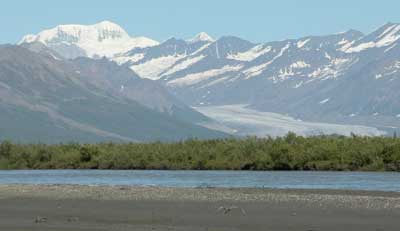
Before launching into the wilderness I chit-chatted with a fine German couple who were doing the full Alaska road trip tour, and having fun. Then a group of other folks, camping nearby, walked across the bridge, because it is a beautiful spot in Alaska. They were wondering how come I could launch my kayak at that ideal spot to launch a kayak, while they foolishly perceived that they had to stay on the road side of the government No Trespassing sign. They were not armed. The reason the folks who formed our government emphasized the right of the common people to be fully armed, was not to defend themselves from the timid little black bears back on the East Coast, but because they knew that the greedy arrogant sort of swine who would be attracted to the cushy, over-paid government jobs would therefore be corrupted, and attempt to intimidate any unarmed, timid public out of their right to walk on public land, etceteras, etceteras, etceteras.With great fortune I escaped upriver, around the corner, out of sight, before I might have been arrested by government thugs, for walking on public land. I noticed no other tracks along the wet sandy river banks. I would probably be the only person up the river for a week or more, especially as far as I was going where most folks turn back sooner.
But I was going to stop short of that white hill in the pictures. I had already been there, on one of those other stories I may or may not have uploaded yet.
I had eight days of food, one of those fold-up comfortable camp chairs that I won in a give-away drawing several years ago, two bottles of truly fine wine given to me by a very gracious person who could afford better wine, three superlative cigars purchased from JR Cigar who sells superlative cigars real cheap, two gallon plastic buckets for blueberries, and duct tape of course. This was going to be a gentleman's sort of bou chase.
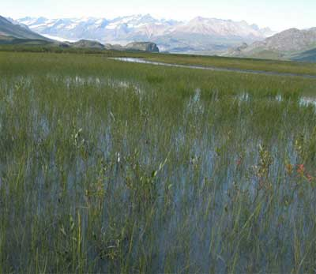
Few things are more boring than lining a kayak up a braided glacial river in a flat valley with the brush precluding a view of anything but the brush beside the river. Same old routine. Walk along the gravel bar until the bend in the river brings the brushy river bank to the start of that gravel bar, then get in or on the kayak to cross the river to the gravel bar on the other side, and so forth, occasionally being forced to line the kayak from a brushy, steep edged bank because there are no gravel bars for some sections. Those are the times one stumbles a lot in the thick brush while trying to line the kayak in the optimum part of the river while looking into the adjacent brush for the grizzly bears that wait for moose and caribou walking along the gravel bars until they get pushed into the brush along the bank where the gravel bars end.And there is also the matter of the deep narrow channels that beaver cut into those banks, back into the brush, that are not easily noticed in the brush until your foot drops down into them and you therefore suddenly face-plant in the brush, while the two lines to the kayak bow and stern therefore get tangled in the brush, while your kayak therefore drifts a bit forward then back downstream, further tangling the lines with brush, and altering the line position that held the kayak bow and stern in the optimum position to stay in the current without creating too much drag.
There are many of those beaver channels, put there to train the human mind in the skills of patience, humor, tolerance, eloquent linguistics and communication with unseen concepts.
And there are also beaver houses along those brushy banks, which offer a tangle of sticks and slippery mud to enhance one's footwork skills. They offer the opportunity to step up a couple feet to quickly glance over the brush to see if there are any bears waiting by the beaver house for any careless beaver or other things.
Three hours into the trip I came upon the junction with another river, at a bluff that facilitated a lunch break, blueberry feast, and full view of the valley. Several pair of beautiful white Trumpeter Swans graced some beaver ponds, but no moose, caribou or bear. It was a hot sunny day, so the wiser animals were laying in the brush.
Oh, on this particular secret river there are more Nagoon berries than I have encountered anywhere else. They are another hazard. They are so rare, and taste better than any other known berry, that one is routinely reaching down to pick them, while lining the kayak, therefore stumbling again, and tangling the lines in the brush.
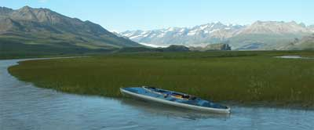
Occasionally a startled ptarmigan bursts out of the brush beside you, loudly cackling, ruffling your otherwise gentlemanly composure.Lining a kayak up a river involves a few techniques, primarily that of routinely adjusting the bow and stern line lengths to keep the kayak bow and stern in the proper position in the changing river currents, to keep the bow out from the shore, but nearly in line with the current to minimize drag. On the inside curves, with the swift current pushing against the bank, a moment of neglect will cause the kayak to nose into the bank, and the lines to get tangled in the brush, which requires going back to the kayak, pushing it out, and re-adjusting the lines. Because one is looking forward and into the brush, for the aforementioned reasons, one is not always looking back where the kayak is hopefully doing its thing in the proper position, which is not always the case. The kayak also occasionally just gets too close to a sub-surface gravel bar and runs aground, which requires going back to it and starting all over, then playing out the lines again. Because the river is laden with glacial silt, nothing below the surface can be seen. Along certain areas of moderately high brush, one must constantly bounce the lines, to hopefully keep them bouncing over the supple brush tops rather than catching on any one larger branch and moving downward to stop all forward movement. Just make sure no one is watching because if they do not know why you are constantly bouncing the lines, they will be amused with the sight. At every opportunity, just stay on the open gravel bars of the outside curves, where the current keeps the kayak out in the river, and
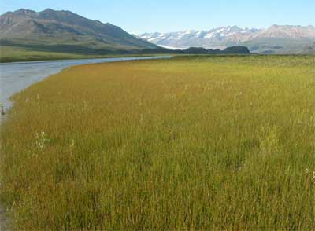
where you have time to properly defend yourself from a charging grizzly bear, without getting the lines tangled in the brush.Time went by. I got closer to the glacier, up near the first two paragraphs of this story. The river got higher, and higher. First the water was bank to bank, and then it came over the banks, and then it made the banks indistinguishable. There is the aforementioned process to negotiate the brush while the kayak is out in the river. There is another process to negotiate the brush while the kayak is also in the brush. I was amused. Nice thing about walking up a flooding river, with a kayak, is that you have the kayak.
Nearing the glacier, and the micro-climate effects of its cold air flow, the brush got smaller on some banks. Patches of grass made other banks easier to walk. After eight hours, I decided to make camp at a familiar spot up ahead, if there was a tent spot above the water. Upon that decision, I noticed a small bull caribou at that very spot.
I made no effort to conceal myself, because the caribou would obviously see me approaching up and across the open river, and walk away. I planned to go farther up the river, and start casually hunting the next day.
But the caribou was standing, eating and slowly walking on a bank next to the noisy rushing water, looking upstream.
He did not look at me once while I waded along the banks and paddled across the river braids to darn near where he was. There was a tent spot, above the water, right where the caribou was standing. I was standing low in a river braid, beside my kayak, behind some small bushes on the bank. It was 7:PM. The caribou was not a large bull, but large enough. It would require five hours to leisurely put the caribou in bags, set up camp, and prepare the evening meal, with a headlamp during the last hour of darkness at this time of year at this place in the world. I would be on a cool breezy river bank, next to water, next to my kayak, instead up in the dry brush full of bugs and grizzly bears, where I would have to pack the meat to the kayak, in several trips, each time re-approaching the kill site in the dense brush, where a bear may have claimed the remaining meat for his own, and be a bit possessive. This was at the start of the hunting season, and the savvy bears were looking for their share of the usual results. I remembered that at this very spot a few years ago, a grizzly bear crossed the river, huffed at me, and continued on.
A bou on the bank is better than a bou in the bush.
I shot the bou. Sure enough, a fresh set of grizzly tracks crossed the wet sand at that very spot, but they did not stop there, and I had a reasonable view of the area.
And so evaporated the gentleman's sort of bou hunt, with the evenings therefore not spent sitting in the folding chair, not drinking fine wine, not purporting to savor stinky cigars, not leisurely picking blueberries during the day, not watching the wildlife and not hanging out alone in the pristine wilderness by an Alaska Range glacier. There is no accounting for the addled decisions of Alaskans. If I were not alone, I would run that guy back to town, and continue to enjoy the trip.
The pair of ravens arrived within moments of the kill. I offered them a couple cuts of fat, but because a human made the offer, by walking the pieces out a ways and setting them on a rock, the ravens were wary, and played with the pieces the entire time, treating them as suspect. The ravens knew that they would eat lavishly upon my departure, if the bear did not arrive first. Ravens do reasonably well around the bear, but must be wary of the routine lunges at them.
The river was still rising. I made three lines in the wet sand near the caribou. Part way through the caribou cleaning effort, I had to make three more lines, and planned the process to move everything to a nearby area a few inches higher.
A larger bull caribou walked by, casually grazing.
The cool evening air on the nearby glacier slowed the water flow, so I finished without having to move to higher ground.
No chance of rain, so near midnight, work done, I just crawled under my overturned kayak, a couple inches above the water line. I placed my rifle and 44 Magnum at hand to defend against anything furry that might want the meat in my nearby game bags.
I have slept in and under my Klepper kayak before, for the story value. Its remarkable discomfort facilitates an early departure. I departed early. What was eight hours of lining the kayak upstream, was an hour and a half zipping out the fast current. Swans gracefully flew by me, a few feet above the river.
I unloaded the kayak on the proper side of the government No Trespassing sign, again, for which the armed government goons would have arrested me if they were out patrolling their No Trespassing signs. I checked on the reason my old jeep alternator had been making a noise the previous day. The bracket bolt had broken, just plain broken. I wired the alternator to the frame, to tension the belt, with the gracious assistance of the Germany chap who was preparing to continue their road odyssey. I rattled off along the bumpy gravel road to test the alternator repair, and a few other wired repairs.
I got the meat cut and wrapped, and in the freezer, except for a whole shoulder I threw on the pit fire grill at the annual Deb and Paul party on the ridge. I got the game bags washed, the kayak dried out and the knives sharpened, ready for the next foray to eek out an existence in a desperate world crawling with armed government thugs enraged at these damn humans doing what humans do without getting government permission. Next time I will drink the wine and smoke the cigars, for the story value. But first I gotta get a broken bolt out of an engine block, which means that I gotta take out the radiator and drill the bolt, and that sort of usual stuff.
Wolf moose chase
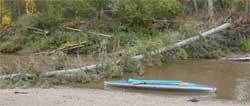
There I was, mind you, and it was desperate indeed, albeit as usual.Oh, you think those words are just the usual boring old rhetoric to start another story. Next time you look down between your legs, expecting to see anything but water from knee to knee, and you see water, you just remember that you thought the desperate rhetoric was not desperate. Ask a New Orleans resident if she or he has a new appreciation for water.
But it took some effort to get that desperate, as usual.
I was off to Secret Creek, in the far north, to commune with the moose, shoot one, and eat it.
I had 12 days of gourmet food, but only three bottles of fine wine, and six superlative cigars that Fidel encourages Americans to smoke because nicotine is a poison. Well, how was I to
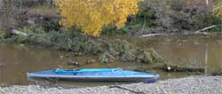
know it would take dang near two weeks to catch up with a moose? It usually does not take that long. Next time I will take more wine.I cleverly left the obstacles in place, the trees laying across the creek, many more than shown in the few photos, which would stop all the motor boats. I lined my kayak upstream, walking along the creek bank, zig zagging the kayak through the toppled trees, usually over the topple, sometimes underneath, and sometimes I just had to cut my way through. The creek was low again, facilitating fools with kayaks, willing to drag a kayak across wet rocks at the many places the creek spread thin. I am of that attribute. The creek also started out a bit muddy, from the recent fire upstream, but it got clear when I got further upstream.
Along the way I looked up to see an object of sincere curiosity ahead, on the opposite bank. The thing was not a normal sight. About the time I stopped in total bewilderment, the gray wolf staring at me head-on, turned and evaporated into the tree line. I had been following his fresh tracks along the creek bank. They were that fresh.
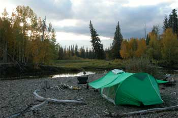
Around the next corner, of the countless-cornered, meandering creek, I again saw the wolf casually walking ahead of me, at my pace, crossing the creek to take a short cut through the trees. It was the corner after that, as I splashed through the water's edge, glancing back at my kayak to keep it in proper position, that I again noticed the wolf ahead of me was methodically moving his head from side to side. I stopped and listened."Here comes the hunter. Here comes the hunter."
Not only was the wily wolf warning all the moose, he was portraying himself as the friend of the moose. Little wonder that Goldilocks came so close to a less endearing story.
Obviously I was now limited to a deaf, stupid or arrogant moose, but moose are generally little more bright than DemocanRepublicrats and lawyers, so little was lost to the effort of the wolf. I pressed on.
Hours later, long past the last place the motor canoe folks would be able to prop through the rocks and over the trees, I came upon a known problem spot, with a combination of sweepers that required sawing a couple of them, in swift water, hip wader deep. Sweepers are trees laying part way or all the way across the river, sweeping the river as it flows by. This group was a puzzle, with some trees above the water, and some underneath, bowed with the current. The object was to cut the trees and not be swept away by a tangle when they snapped. Being alone, with little likelihood of help from my fellow predator, the wolf, I carefully calculated the expected movements, and braced myself for the results.
So I did not expect such a dramatic lack of response when the first tree broke free, therefore causing me to topple in the direction I did not brace myself, full face in the swift cold water. No, it was not desperate yet, but cold.
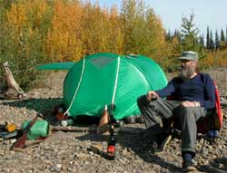
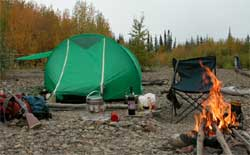
And when I came up, it was without my .44 in my shoulder holster, so instead of immediately going to shore to strip off my clothes to get warm and dry, after quickly looking around to insure that no person, wolf, bear or moose had seen that dumb maneuver, I stayed out in the cold water, feeling around the creek bottom trying to find my .44. That only took long enough to insure than any vestige of dry fabric on my body was saturated with cold water. So I stayed out there to saw through the next tree, and then came to shore for a bit of a lunch break and clothes wringing.Well, the same spot was where I startled bear a few years ago, who ran only because he saw the glint of my .44 in my shoulder holster, or so I might imagine. I decided to not be quite so dumb next time, and put the gun in the kayak while I was dinking around with tangles of trees in the creek.
What with my pace therefore quickened, to convert food calories to heat calories, to finish drying the clothes I was wearing, I arrived at my favorite Secret Creek camp site that I have carefully manicured over the years, across from a quintessential moose meadow. First I set out the wine (Tefft Cellars Merlot, Horizon's Edge Reserve Merlot), cigars (JR Ultimate) and folding chair. Then I set up my still relatively new Stephenson's Warmlite tent, and made a fire to give my damp clothes that rustic campfire aroma which identifies the noble hunter who shows up at the party back in town, before he washes his clothes, rasping the tolerance of more cultured gentlemen and gentlewomen. I proceeded to cook one of my gourmet meals (glop) on my trusty MSR stove, light a cigar, pour a crystal glass of fine wine, and look for moose. Notice the contrived, moose-looking pose in the photo. It took a dozen times to get that photo, running from the camera to the chair, to sit just right, with wine in hand and cigar in mouth, looking off toward the meadow, without looking too goofy, before the self-timer clicked the camera. The last few times got a little wobbly, from the effects of the cigar smoke.
I was only going to be there for one night, before I pressed on up-creek, because I have never seen a bull there, but a cow and calf moose showed up to graze in the moose meadow, so I decided to stay for a few days, to see if a bull would show up. Anyone else would have to pay good money to be alone at a beautiful place like that in the wilderness. Come to think of it, the exorbitant federal and State taxes I paid on the gas to get to where I launched my kayak would feed most peasants in the world for months. Being a peasant, I was hoping for the same, from the moose I was chasing.
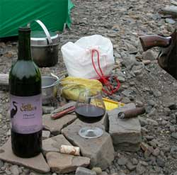
The next day I tip-toed up-creek, down-creek, across-creek, through the woods and into the brush, some of which are in the pictures, in search of a bull moose, in addition to sitting on my folding chair, in front of the fire, portraying the image of a gentleman moose hunter. The cow and calf were there the next evening, and all night, close at hand just across the creek, fully comfortable with me and my camp activity. The calf was small for the season, and still occasionally suckled the cow, which was cute.The next morning, as I was casually watching the moose, I heard the awfulest noise I have ever heard, somewhat, which I recognized as the cow moose suddenly exhaling every cubic centimeter of air from both lungs, through her large flappy nostrils. The sound was a cross between a growl, a snortle and a blattle, not unlike the deep ruddle of the ruddle-ruddle-ruddle of a Soviet Bear Bomber flying at ground level explained in another story. The nearby calf bolted toward the cow, running right past it as the cow wheeled and ran after the calf, through the thickest brush at hand. And they keep running, while she kept snortling, for miles. At the moment of the initial snortle, three beautiful gray wolves stood up, grinning. They had already surrounded the cow and calf, each within 20 feet. The dominant wolf shouted to the fleeing moose, "You twits, did we not tell you that guy is a hunter." With that the wolves stood there and let the moose run away.
Then the wolves sniffed around a bit, and walked over to the creek, directly across from me, to stare and me and consider my food value. Wolves see things in terms of calories. I tried to look skinny.
Then the wolves began stalking me, saliva drooling from their fangs. Well, they walked back in the trees, watching me, and circled around me, a wily stalking maneuver. Well, maybe they were just following the creek which circled around me at that typical bow in the meandering creek. But in a few minutes I walked up stream a few steps to get a better view up stream, and there were the three wolves, back out of the trees, just about to sneak across the creek to my side, behind my tent. No, it was not desperate, yet.
Well, caught in the act, and unable to lunge at my throat just yet, what with the creek in the way, the wolves slunk back into the trees, and were content to go warn more moose, about the hunter, which proved effective in keeping the bulls away. Each night thereafter, for the entire hunt, as they walked past my different camps, they made yap-bark
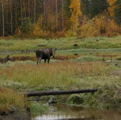
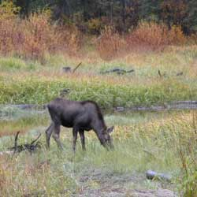
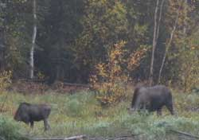
sounds, just to let me know that I should keep the back door of the tent zipped shut, on account as I kept my food in my tent.Some mornings were foggy, with mist swirling among the adjacent hills. The trees appeared as a huge forest lawn sweeping up over the low ridge, blades of dark green spruce serrating the sun-lit fog at the crest of the hill. The lawn was laced with the golden autumn leaves of the birch and aspen, like wild flowers in an unkept yard. Stark white birch trunks stood as scattered sentries in the forest. While I was occasionally stumbling among the birch and aspen near the creek, each breeze would shower me with golden leaves. Great horned owls hooted with each other, sometimes all night with interminable tenacity, each insisting on the last hoot. Squirrels chattered. Blue Birds and little clouds of twittering chickadees flew through the trees. An occasional cluster of Mergansers scooted upstream or down stream, and individual ducks flew or paddled by. The last few Canadian Geese heading south tarried at the creek for a few minutes, then moved on. Bald eagles laboriously flew along the creek. Ravens checked on me each day, loudly discussing my status with other ravens seemingly always upstream. Mysterious sounds crinkled, crunched, whiffed or snapped through the deeper forest. It was the louder snaps that often held me motionless, when dead branches finally broke and fell from trees, and laughed while I waited for the next audible step of a large bull moose that was not there.
Unlike the city, through the forest, every animal is listening or watching for what is around it, before moving.
The sky was clear one night, with the Milky Way glowing behind the northern lights
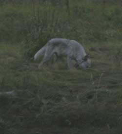
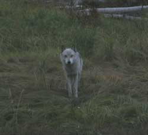
curling colors around clusters of stars. The clear air got cold. Moving upstream a ways that morning, on a bit of a scouting venture, the kayak crunched through thin ice on each shadowed bend in the creek, an uncommon sound for the animals to consider. And when returning, quietly drifting with the current, a Merganser was so curious that it paddled within paddle length before it suddenly realized that the drifting thing was alive.My camp was just upstream from a significant beaver dam, as well as just downstream from one, like many places on the creek. There was therefore a family of beaver in view of camp, doing the daily and nightly beaver things, including dam building, food collecting, slapping the water with their tails, and playing. I was amused to watch one of the beaver repeatedly try to lunge up out of the water near the bank, to grab a choice willow hanging out over the creek. He finally prevailed. One of the smaller beaver would occasionally pester the big beaver, and make all manner of cute beaver sounds. The big beaver seemed to enjoy the attention. They also ate the same sedge grass that the moose were eating, within a few feet of each other, where the log crossed the beaver run below the moose in the photo, which is where the wolves were sniffing for recent beaver activity.
A couple days after the wolf thing, the cow and calf moose showed up again for a couple more evenings and mornings, grazing in the quintessential moose grazing meadow. Short memory, not unlike politicians, other government dolts and the fools who believe them. If you believed the RepublicratDemocans who cut domestic programs to fund their current Iraq/Afghan war quagmire, where will the billions of dollars come from, to rebuild New Orleans, Galveston and the next storm-battered sink hole? Abandon hope.
The camp wine cellar therefore diminished, for my having failed to bring enough wine, and because no bull moose ambled through the quintessential moose grazing meadow. I moved camp up-stream to another place where another story had been written before, therefore certain to find a moose like I did then. There were fresh tracks of a young bull. I set up another comfortable camp, with
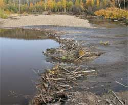
another table of flat rocks, a pile of wood, and a bundle of birch bark to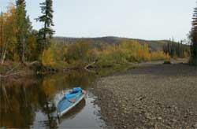
start fires. Birch bark would be magic if its fire starting qualities were not just its highly flammable resin content. It burns even when wet, and hot enough to dry the wet wood you use for the fire, within reason of course. I set about the task of sitting in my chair, looking this way and that, for the bull moose that was supposed to show up. And I looked, and looked, and looked.There being a rhetorically pleasant bit of drizzle on this trip, for a few days, and nights, and days, and nights, the camp fire wood was indeed wet. However, because a few hundred beaver lived upstream, there was an ample supply of neatly cut, de-barked wet fire wood laying along the banks. I therefore initiated an air remoisturizing program, wherein the heat I got out of each bundle of smoldering wood was sufficient to drive the water vapor out of the next bundle of sticks above it, just enough to cause it to smolder to do the same to the next bundle, to produce the water vapor that then promptly condensed in the cool air, to drizzle back onto the camp fire. Cool program, huh? It is the model for government programs. But I would occasionally drag in a log to get the fire ripping, so I could sit back and light my next cigar by simply unwrapping it. Wise people build a small fire, huddle close, and keep warm. The rest of us build a big fire, and keep warm gathering wood.
Upon my arrival at this second camp, after studiously analyzing all the moose, wolf and bear tracks in the area, I scuffed-out the moose tracks in the sand at each end of the gravel bar, where the moose habitually cross the creek from the end of one gravel bar, to the next one on the other side of the creek, as the creek meanders back and forth creating gravel bars opposite cut banks. I could therefore more readily recognize new tracks that showed up during the night. Moose are mostly nocturnal, and most often seen during the early morning and
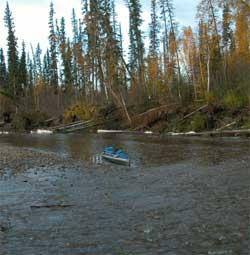
evening. My tent was in the middle of the gravel bar, with a view of each end,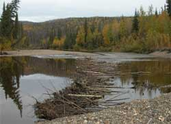
but the exact ends of the gravel bar were just out of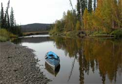
sight behind brush, where moose like to sneak through that brush.On the first morning at my promising new camp, I walked to the up-stream end of the bar. No fresh tracks. And I walked down stream. No fresh tracks. So I went back to my camp in the middle, a short distance, and put on my pack, to walk around a few corners. I could cross the creek in hip waders about half the time, including this particular corner, sometimes without getting my ankles wet, but the other half the time the water was too deep. Fifty feet from the tent, up stream, in full view of my tent, moose tracks came out of the creek, and went into the woods, and the rocks were still wet from the water that dripped off the moose. Moose tracks rarely get more fresh without the moose standing in them. While I was at the lower corner, next to the noisy rapids, a moose had walked down the creek, with the usual splashing noise I did not hear because I was beside the rapids, had seen my tent, and walked into the brush. The tracks were those of a young bull. The hunt was on.
You cannot catch a moose by chasing it through the woods. Those huge moose ears function on sound, and react most noticeably to noises following them. I hastily crossed the creek to get on the higher bank to see if I could see the moose in the aforementioned brush between my tent and the tree line. That is when I noticed the fresh tracks up-stream, to belatedly recognize that the moose was heading down stream. I splashed back across the creek, ran back along the gravel bar to the lower corner, to see the tracks, not the moose, came out of the trees, and head down creek, running. If I'd only been where I was not or would have been, I would have been where the moose was when he was there.
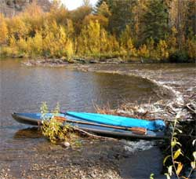
 I
ran back to the camp, flipped the kayak over, threw in the pack,
and paddled off on the chase, with the traditional enthusiasm.
I glanced into the brush on the right and left, but kept paddling
hard. The moose would take the short cuts through the trees at
each bow in the creek. But it would walk casually most of the
time in the cover of the trees, while I was paddling with serious
intent. After several meanders in the creek, I reached the down-creek
end of a meander that I calculated was ahead of the moose. I would
quietly wait for the moose to come out of the trees at the end
of a gravel bar, right across the creek from where I was. This
was ideal. Just in case, I walked around the corner to check for
tracks. There they were, running faster.
I
ran back to the camp, flipped the kayak over, threw in the pack,
and paddled off on the chase, with the traditional enthusiasm.
I glanced into the brush on the right and left, but kept paddling
hard. The moose would take the short cuts through the trees at
each bow in the creek. But it would walk casually most of the
time in the cover of the trees, while I was paddling with serious
intent. After several meanders in the creek, I reached the down-creek
end of a meander that I calculated was ahead of the moose. I would
quietly wait for the moose to come out of the trees at the end
of a gravel bar, right across the creek from where I was. This
was ideal. Just in case, I walked around the corner to check for
tracks. There they were, running faster.
Back into the kayak, to paddle with greater traditional enthusiasm. After another few meanders, I came around the corner to see the rump of my moose, a young bull, right there in front of me, walking fast along a gravel bar. The moose was looking ahead of him, as moose do when they are moving with intent, oblivious to the guy right behind him, in the kayak, fumbling for his gun and trying to put the paddle where it was handy but not in the way.
Problem number one: The rump (hind quarters) is where one obtains the better cuts of meat (steaks), not a preferable place to shoot a moose with a 375 H&H Magnum if your intent is to get the better cuts of meat. Problem number two: The moose was in and out of the water along the irregular bank. Do not shoot a moose in the water, or you will end up with stories of a big heavy dead moose in the water, not convenient. Problem number three: If I called attention to myself, the moose might bolt into the adjacent trees.
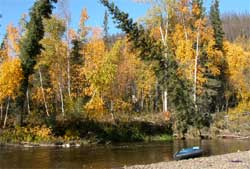
So I quietly paddled along behind the moose, at its pace, within fifty yards, waiting for it to walk to a better position, out of the water, and turn sideways, where I could get out of my kayak and get a good shot at something other than the steaks.Problem number four: Did I mention the beaver dams?
Well, the water was low for the second year in a row, and apparently the spring break-up was not sufficient to blow out all the new beaver dams that had been built in the low water, many more than shown in the photos. They were full cross-creek dams, built up from the previous year, on a creek at the upper difficulty level for full beaver dams. So going up the creek offered an interesting puzzle of kayak maneuvering over, through and around the ends of beaver dams. There was usually a slot where most of the water was flowing, but often with a shallow rocky outwash or a log obstructed switch-back or such obstacles, and deep holes with swift water right beside the best tangle of sticks for the kayak, but not for the person. One dam slot was a tight Z shape maneuver of the kayak, not just an L shape or open Z. Another was a straight fast flush right into a big tree root ball, etcetera. Because the creek was cutting through ancient alluvium, one spot could be in inch deep, and less than an errant step away could be neck deep, or at least over hip wader deep, which I had discovered at one such step.
Well of course the bull was between two gravel bars divided by one of the more complex beaver dams, including deep water and a tangle of dam logs and branches. That was problem number four. There was no chance of a rational shot until the moose and I both cleared the beaver dam. About the time the moose was comfortably beyond the dam, walking up on a perfect gravel bar beside the creek, my kayak was just entering the Z shaped beaver dam spill slot. And about the time the moose
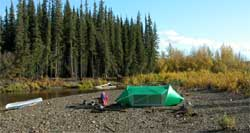
turned, to present a perfect full broad side shot, and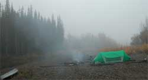
therefore see me, while I was watching the moose instead of where my kayak was going, the bow of the kayak got sucked into the wrong slot of the beaver dam, leaving me slaunchwise to my intended route, with one side of the wobbling kayak over excessively deep water between the dam and a big tree root ball, and the other side over a tangle of branches and swift water flowing through the dam, precluding me getting out, or even shooting from the kayak as the current on my stern pushed me around, 180 degrees, bass akwards to the object of the chase.Looking over my shoulder, I noticed that the moose patiently watched the whole show, amused, standing full broad side, while I pushed and paddled and fumbled to get my kayak out of the wrong slot, turn another 180 degrees without hitting the big root ball, and get pointed into the right slot that quickly sucked me into the rapids which required my full attention while the moose, which I was now very rapidly approaching in the swift water going directly toward a cut bank, therefore walked up into the brush to take the next short cut between there and the next meander in the river.
Problem number five: By the time I got around the meander, where the deep rapids spread out into shallow quiet water, before the next shallow
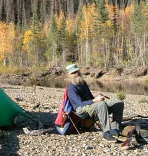
rapids, the moose had already crossed the creek at the end of the short cut, and was standing on problem number five, the next gravel bar formed by an old beaver dam and log jam that was a maze of logs, water braids and depressions, the worst spot on the river. And the only reasonable exit for the moose was into the trees, so the chase was going to end here, one way or the other, and there was not a moment to lose, on account as the moose was now fully aware that something was following him, and maybe the wolves were telling him the truth this time. I got my kayak to the creek bank about the time the moose got behind some brush in a depression, still pointed away from me. The moose looked back at me, no small distance away, its head in full and clear view. I could shoot the rump steaks in the brush, or try a difficult head shot, the latter being the only rational choice, on account as shooting into brush can sometimes produce embarrassing results, or worse, to say nothing of imperiling the steaks I was after.It is for times like this that you want to have open iron gun sights, rather than a scope, so if you miss, you have an excuse, a lame excuse, but hunting includes a rich tradition of variously lame and innovative excuses, steeped in all manner of refinement. That is why I have open iron sights. I hastily shot at the head, and the moose thereupon casually walked into full view, while I loaded my rifle again, then down into another depression behind more brush, rump toward me again, to look back at me again, with a full view of his head, just like the last spot. He was closer to the tree line where he was going to escape. I shot at the head again, and missed again, and wisely looked down at my gun sights to see if I had bumped them, or something, which, in case anyone was looking, would suggest that perhaps the problem was with my gun sights rather than my shooting skill. Always secure your excuses first, and then remember the object of the quest, which, in this case, was therefore bolting into the trees before I could load a third round into my single shot rifle, another well planned excuse.
I carefully looked around to insure that no human or more intelligent animal was standing within view, laughing. I was the only human on the creek, to my knowledge, but I wanted to make sure that the stories I told would not be subject to embarrassing questions by anyone who actually saw such a classic hunting goof-up. Well of course the gun sights had not been bumped, but that was a difficult shot for anyone, really.
I did not want that bull anyway. Too small. Not early enough in the morning. A long way from camp. The sky was about to drizzle. So back up creek, through that nasty beaver dam puzzle again.
The scant wine cellar stock was diminished, and the cigar humidor was consulted. I sat in front
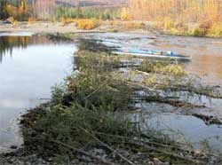
of the camp fire, amid the golden leaves of the autumn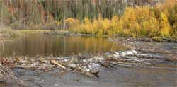
birch, aspen and willow. Another day or two passed, while I hunted the likely spots near camp.In the quiet night, the rushing and gurgling and burbling sounds from the rapids and riffles and beaver dams on the river, especially when a breeze rustles through the trees, sound like anything you might imagine you are hearing, often not unlike entire conversations, regarding great and weighty matters of serious consequence, with comments by no few animals, often obscuring the sounds of bears sneaking up on the tent, if some of those sounds are not the bears.
I was in the brush behind my tent when I heard a snuffling out at the creek. Snuffling is not normal, except for three otters cruising downstream, playing as they go, rolling over each other, blowing bubbles, snuffling and looking up at the befuddled hunter walking out of the brush.
A summer forest fire, among many in Alaska this summer, had burned to one side of the creek at spots, two of which are shown in the photos. Among the black spruce pecker poles (dense stands of little black spruce) the fire was hot enough to burn down to mineral soil, leaving no organic ground cover. The charred tree trunks were either standing or laying on the ground. I walked through a couple such spots. Because of the recent rain, with puddles held by the dense mineral soil, I was walking in slick black ash soup. Precarious walking. The slightest wind blew over many trees where the fire was hot
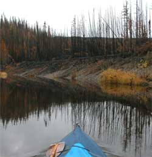
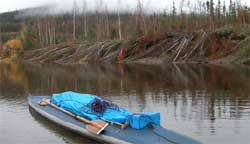
on the ground. Tree roots are shallow in interior Alaska, growing in the thin layer of organic matter that accumulated since the previous hot fire. Without that layer, nothing holds the trees, such as those laying down the creek bank in one of the photos. Interior Alaska is a fire ecosystem, still young from the last ice age. Rarely does one find an old growth stand of trees that attracts the lightening that starts the fires. But the young deciduous growth that holds more moisture, of prime moose habitat, extending into the lee sides of the meandering creeks, usually survives the fires. Moose hunters like Alaska fires because they burn the spruce, to thus encourage new willow and alder growth (moose food).Behind the trees along the creek, on the flat side of the valley, is a wide patchwork of ancient creek oxbows, stranded as the creek cut lower in its current channels. They became swamps, grass flats, lakes and beaver ponds. There are willow clumps, open patches of hummocks, laceworks of spruce and birch, through which moose, bison ghosts and mammoth roam. If you sit very quietly on a hillside, with high quality binoculars, you can occasionally see a sabre tooth tiger emerge from the edge of a dense stand of trees, just long enough to turn and slip back into the cover of the trees and time.
Time had passed, measured by the fewer cigars in the trip humidor, and it was time to start trying to call in a moose, with a moose call, of course. Now, moose calling is a whole separate endeavor. There are cow calls to attract any bull, and there are bull calls to attract the larger bulls willing to fight for their territory of cows, which can scare away a smaller bull, the ones with the more tender steaks. If it is too early before the start of rut, moose will ignore a moose call, or know not to go over near another moose who is psychologically not yet fully balanced. But when no bull is in sight, any chance of attracting a bull or causing one otherwise out of sight in the brush, to move, is a reasonable choice. But consider most hunters who only know enough to make pitiably weak grunting sounds into a birch bark moose call megaphone, with their imagination that it sounds like a bull or cow moose, or at least not a grizzly bear. Simply consider the comparison between two huge moose lungs exhaling air through a huge moose throat, and those of a dinky little human. Little chance that another hunter, being among the equally ignorant, will recognize the
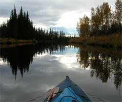
difference, but some moose have been seen to drop to their knees, laughing hysterically at a hunter trying to make moose sounds in a birch bark megaphone. No problem. Listen for laughing moose. So as to not embarrass any of those routinely ignorant fellow hunters, I will not dwell on my moose calling skills, or their lacking.I unlimbered the birch bark moose call megaphone that I made, and let fly with moose sounds, in the three cardinal directions, those being the three willow/swamp areas behind the adjacent trees. I attracted only ravens, for some reason. Well, I can talk to ravens also, sort of.
Hunters have more theories for animal behavior, each favoring the hope that an animal will therefore appear, than government wildlife biologists can invent for proposals to get more funding. That is a lot. And hunters often contradict their own animal behavior theory profoundly explained only a few minutes prior, because an animal did not appear soon enough. If you cannot sound like a moose, cut a bunch of fresh willow so the moose will smell it and be attracted to a buffet, or make diminishing wolf howls so the moose will think wolves are leaving the area. Be noisy while in camp, because the many stories about moose wandering into camp mean that moose like camp noises, etceteras.
I had chased one bull back down the creek, and now probably scared away the others in the area.
Leaving a stack of fire wood and a bundle of birch bark, I packed up camp and headed further up-creek, barely able to pull my kayak through the strong current of the chute in the center of the next large beaver dam. I leisurely paddled the long creek-pond behind it, passing impressive beaver logging operations along the bank.
As I went by each small tributary, the creek was getting shallower, meaning more hull scraping and resulting rhetorical artistry if returning with a moose-loaded kayak. It is nice to take a kayak above where the heavier motor canoes and
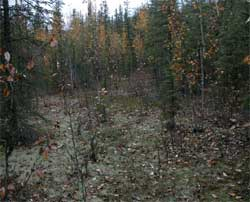
rafts can go, but there is also a limit to kayaks, which I have not been adept at recognizing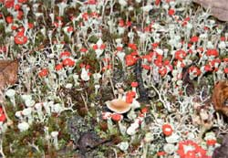
before loading the kayak with a moose. The shallow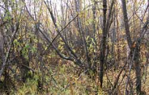
riffles identify that limit, and by themselves, they each look deceptively tolerable. I scraped on through more of them.A few years ago I found two 18,000 year old bison foot bones along the creek, a metatarsal and metacarpal, within three feet (one meter) of each other, among other old fossil bones I and colleagues have found on this creek. There were a lot of old fossils freely roaming Alaska in the early days, before government was invented to destroy freedom. A friend suggested that two such bones so close to each other could indicate the possibility of a concentration of more bones. Did I remember on which of the countless bends in the creek I found those bones? Of course not. Most of the river bends look the same. So on this trip I was always looking down at the rocks, for bison bones, which may account for the lack of moose sightings. But fossil bison bones will make a lot of bison bone soup, while moose steaks do not last long. So along the way I was suddenly beset with the sensory perception that something was either amiss, or in perfect order. At the moment I suspected the amiss part of the phenomenon, perhaps a pack of sabre tooth tigers crouching in the adjacent brush, I was looking at a bison foot bone, and recognized the perfect order of the same spot I found the other bison foot bones, within ten feet, as a distance rather than a number of bison foots. Cool. Another
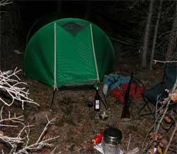
metacarpal, with one side broken. The three of them are shown in a photo below.About that time I reconsidered the unusual fragment of rock I found laying among the rocks along the creek, a couple days prior, which I casually put in the kayak glove compartment because the rock was unusual. I inspected it more closely, and upon serious analysis of inordinately detailed nature I concluded that it was indeed a very old, time-worn spear point which was the very spear point that killed the bison whose three foot bones I had found. Archeological science advances sporadically.
I passed the highest camp I had previously made on Secret Creek. If I killed a moose, I would be returning heavy, with camp and moose, without wine, in the thin up-creek water, a long ways. I pressed onward. There were fresh bull tracks along the bank.
Well, along about 4:30 PM, early enough in the day, not threatening to drizzle, much, while wearily trudging along the bank, lining my kayak up the creek, with the camp in the kayak, looking down at the rocks, for bison bones, I looked up and saw a reasonably sized young bull moose in front of me. I got the rifle out of the kayak, shot the moose, and calculated that I would be in my tent by midnight.
The moose fell on bear tracks, not unlike the caribou in the previous story. I looked around, and began the hard work part of the trip, as the sun set behind the clouds. Butchering a moose, a laborious endeavor, by headlamp in the dark, while bears and wolves were creeping around to see if this guy is actually alone, intently looking down at what he is doing, not noticing the bears and wolves drawing straws, was not so bad this time because a pair of beaver in the creek, behind their dam I had just gone through to get to the moose I just shot, slapped the water every now and again, to warn the bears and wolves that a dangerous hunter was there. But later, as darkness creeped up to the very edge of my headlamp, I became a bit concerned when the beaver slapped the water a couple times, a hundred yards upstream, apparently warning me of what was there. I listened for the distinctive sound of soft bear feet walking in the moist dirt of the stream bank. No, it was not desperate, yet.
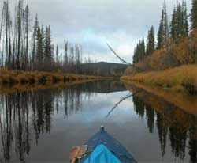
By midnight the moose was in the game bags, beside my tent where I could conveniently harass any tempted bear that might amble by. I put my tent on an idyllic little moss covered spot among the spruce trees, eight feet from where the moose fell on the river bank, and took the photo with the flash. I was on the top side of a knee high cut bank. Way cool camp, and the clouds evaporated. I sat back in my fold-up chair, cooked yet another gourmet meal, enjoyed a fine cigar and the last of a superlative wine (Redbank Fugitive), while watching some unusually low northern lights stream through the tops of the spruce trees. A Ruffed Grouse landed in some branches beside me, within five feet, staring at me in the dim night light, and never did figure out that I was a hunter, as usual for Ruffed Grouse. He eventually flew away to further his forest habitat education. I set my cooking pots and kayak paddles on top of the game bags, so they would clatter if a bear got the long straw and was assigned to grab the meat for the others. I slept through another spectacular dream kayaking somewhere among icebergs a few thousand years ago, or something like that.Upon the morn, if I pressed hard, I might be able to reach my first camp, if I was lucky, I thought. With a typical alpine start that morning, I was an hour down the river, somewhat, when I went through a bit of a difficult spot. I thought I had done just fine, when I noticed that the bow of the kayak seemed a bit high, which perplexed me. I was wondering how the bow of a moose-laden kayak could become elevated, about the time I glanced down between my knees kneeling on top of the kayak there near the stern. The water was supposed to be on the outside of my knees, not between them.
It was desperate indeed, albeit as usual. There was suddenly to be seen some furious paddling, furious, nay, desperate, pointed straight at the shore, and I got close enough. Was I not fortunate that I was not between two cut banks, as is the case at no few spots on the creek, or what?
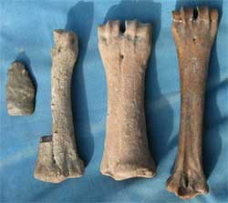
This time my .44 was already in the kayak, below the water line, along with my rifle, binoculars and everything else. I would have taken a picture of them down in the water, but the camera was down there also, fortunately in a suitable case. I had seen that sight before, which accounted for some of the other repairs on the kayak, verifying my nature.It was a cool rainy day. I piled the bags of meat, and everything else on the rocky creek shore, and covered it all with my kayak spray skirt and other things. There was a 12 inch rip in the hull of the kayak. The repair had to be a good one, because it was going to encounter worse than what ripped it this time, often, before I got back to the road. My mind reviewed the worst of the beaver dams and rapids. The path ahead was fraught with peril.
I sewed up the rip, and was thinking I might just efficiently get the kayak to float again after all. Then I attempted to dry the hypalon hull, to cover the stitches with duct tape, to make the rip waterproof. And I attempted. And I attempted. And I attempted. I vigorously rubbed the hypalon with dry cloth, only to have moisture immediately condense on the cold surface. Before I left six hours after the hasty beaching, I had a visqueen plastic enclosure draped over my paddles, over the kayak. I had my camp stove burning inside the enclosure, toasty warm, under which my upper torso was laying, with the rest of me out in the cold rain, on the most uncomfortable rocks. I heated a metal cup, which I kept pressing against the hypalon, to get it warm enough and therefore dry enough, without any condensation, to allow the duct tape to stick. I put the duct tape on both sides, quite wisely, doubling the time for that process. Having completed the task, and gazing at the next wet rock riffle a hundred yards down stream, I decided to carry everything past that one, just to assure the kayak that I sympathized with it. And thus I set out again, late in the day. Ah, an alpine start is not a description of the early morning.
The repair worked. And it encountered much worse going through and over several beaver dams, rocky shallows, sweepers, stumps, broadside on a big rock, and a couple other embarrassing screw-ups. A heavy kayak requires a bit more work when maneuvering through puzzles. While I was up creek the beaver had been busy, albeit as usual. And
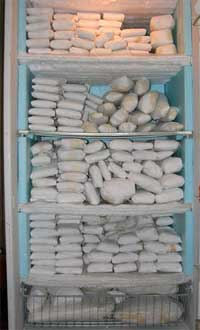
more trees fell across the river. The going was noticeably more difficult. The beaver concentrated on the places through which I had brought my kayak. At one complete blockage, I sawed through a tree which then snapped, to release a larger log that jammed against a stump, to more thoroughly block passage, with the key log deeper in the water. I sawed through the only other log small enough for my saw, and carefully wove the kayak through the results.A red salmon swam over to my kayak, then continued its unique trip upstream.
And that was just to reach my second camp site, with tent loop rocks still in place, with a stack of firewood and birch bark. I was therefore afforded yet another pleasant night, alone in the wilderness, sitting by the camp fire, reflecting on my good fortune, but concerned with how many times I had to wring out the sponges while paddling down the creek. The repair was not perfect, and the path ahead was still fraught with more peril. That night my friends the wolves yapped at me while cruising the creek, apparently having not yet been far enough upstream to find the leftovers.
And I prevailed against more of the same the next day, with no few time-consuming puzzles of sweepers and beaver dams, to reach the road late in the day.
And then I put the moose in the freezer, with the caribou and the Chitina salmon, as you can see.
Merry Christmas, Merry Christmas, Merry Christmas, fer good grief sakes. 2005
And Happy New Year.
Whatdaya mean is was mid March before you saw my annual Christmas 2005 form letter to all my relatives and friends. Check your computer more often. No, wait, it is mid March when I am writing this. Well, I have been busy. There has been wine to drink, governments to rag, wine to drink, ah, and whatever else people do.
I have been at the computer the whole year, as my new Economy Web Cam can verify at any moment. Well, just check it out to see if I am there right now.
I still have the stack of Christmas cards and annual form letters on my desk, to remind me that I gotta get this, one-upload-responds-to-all, annual form letter finished. Thank you for the cool Christmas cards.
So what I have been doing all year is already in the previous stories, and on my other websites, except for the things I did not get around to cobbling together in words, and I cannot remember those. The time spent working does not count. Check out AlaskanAlpineClub.org. The ice tower last year, and the two ice towers this year, consumed entirely too much time and thus set back certain other endeavors.
Yes, I planted more trees around BuchananLake.com, wrapped them with wire screen and shook my fist at the beavers. I went to Montana, of all places, to assist with a certain project related to a certain effort regarding a certain boring paperwork process to assist our dear and benevolent government to sooner collapse itself. Yes, I should spend more time on that project, rather than all these diversions, so we common people do not have to endure so many years of financially debilitating, bureaucracy-induced agony caused by the privileged government class, pitiably ignorant and malicious sops that they are. But first I gotta finish my annual form letter.
That's it. That's it. That is my perfunctory annual Christmas, End Of The Year form letter. The stuff I have done so far this year, 2006, will be described sometime next year, which will give me enough time to forget most of it, so I can get more done. I have a really interesting project planned, but then, I have had a lot of really interesting projects planned, so get busy on your own projects because mine might not see the photo and upload stage, which is why they are called plans.
Stories 10
Stories 11
Stories 12
Stories 13
Stories 14
Stories 1
Stories 2
Stories 3
Stories 4
Stories 5
Stories 6
Stories 7
Stories 8
Places
Concepts
Smoking
Smoke Photos
Smoke Others
Stuff
Links
Home